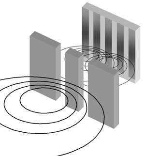
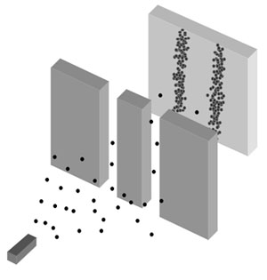
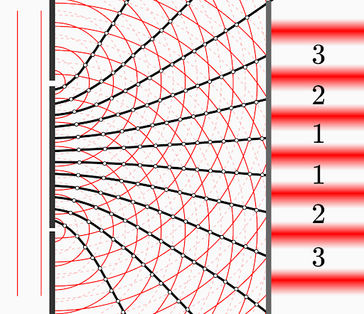
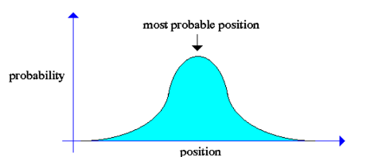
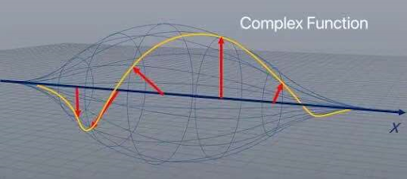

La mecánica cuántica es una rama de la física que nos permite entender el mundo a una escala menor, esto significa que estudia y describe el comportamiento de los átomos, moléculas, protones e incluso circuitos electrónicos a nanoescala.
REAFO - Recurso Educativo de la Funcion de Onda
Mecánica Cuántica
Dualidad de la onda-partícula
En la mecánica cuántica podemos encontrar que las partículas se pueden comportar como ondas y las ondas se pueden comportar como partículas, para entender este fenómeno mejor, debemos estudiar el experimento de las dos rendijas. Primero vamos a mirar al experimento de las dos rendijas usando ondas clásicas y partículas clásicas.

En estos dos ejemplos, podemos ver la diferencia entre las partículas y las ondas en la física clásica. Mientras que las partículas chocan en una posición específica y no pueden ocupar el mismo lugar al mismo tiempo, las ondas pueden interferir unas con otras, permitiendo que se añadan o pasen entre sí, esto significa que puede haber una al mismo tiempo que se esparcen. Ahora con un enfoque a la mecánica cuántica seremos capaces de ver la dualidad de la onda-partícula que la luz posee.

Se vuelve visible como la luz se comporta como una partícula, pero también como una onda. Si la luz fuera sólo una partícula, sólo dos parches se verían; y gracias a que la luz tiene un comportamiento similar a una onda fue posible que se expandiera. Esta es una representación visible del estado dual onda-partícula.
Comportamiento de la función de onda
Cuando hablamos del comportamiento de la función de onda, tenemos que descomponer palabra por palabra para conocer que significa antes de mezclarlo, primero que nada, el comportamiento es el modo en el que un fenómeno natural funciona, la onda es cualquier cosa que tenga una forma de “ida y vuelta”, como cuando tiras una roca en el agua, finalmente una función es la relación entre conjuntos de números, pero, podemos pensar sobre ellas como una máquina matemática en la que pones un conjunto de números en ella y arroja un resultado que depende en ese conjunto ingresado.
Entonces la función de onda es una función gráfica que parece una onda, de este modo la función de onda no parece tan complicada, pero cuando introducimos el comportamiento en un contexto cuántico, la cosa se vuelve un poco complicada. Una función de onda es una representación gráfica de la interdependencia de un conjunto de datos con relación a una partícula donde la entrada puede ser una propiedad medible, la posición de la partícula, qué está haciendo la partícula o en qué momento puede pasar algo y el resultado se vuelva más complejo, no podemos saber nada exactamente pero podemos predecir las probabilidades acerca de las propiedades que podemos introducir.
Y, ¿por qué debe ser una onda?, la onda nos da una predicción con las mejores posibilidades para una partícula. Si imaginamos que queremos conocer en qué parte una partícula podría estar en una caja de una dimensión, la manera en la que se comportan las funciones de onda nos dirán en dónde la partícula puede estar sólo mirándola.
Solo mirando, podemos decir que el lugar más probable en el que la partícula esté es en el centro y no en los bordes, pero esto no nos da una probabilidad en sí, sólo una idea general acerca de la posible posición de la partícula, para hacerlo incluso más complejo la función de onda no sólo va arriba y abajo, está rotando a través de números reales e imaginarios, a la combinación de estos se les llama espacio complejo.

Obra publicada con Licencia Creative Commons Reconocimiento Compartir igual 4.0